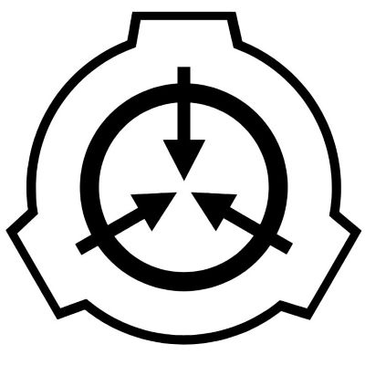
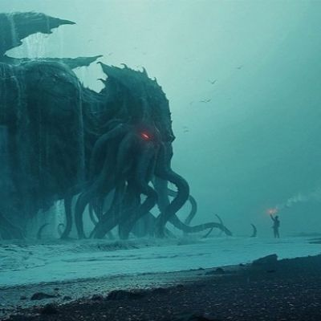

니폴리탄
정답이 정해져 있지 않은, 수수께끼의 텍스터형식 괴담
정답이 정해져 있지 않은, 수수께끼의 텍스터형식 괴담
도시괴담
소문의 형식으로 실체나 확인 불가능한 괴담. 대표적으로 빨간마스크
소문의 형식으로 실체나 확인 불가능한 괴담. 대표적으로 빨간마스크

scp 재단
이상현상, 괴생명체를 처리하는 비밀 집단. 팬들이 괴담을 작성하는 형식이다
이상현상, 괴생명체를 처리하는 비밀 집단. 팬들이 괴담을 작성하는 형식이다

코즈믹 호러
인간이 다룰 수 없는 거대하고 위대한 현상, 생명체를 보고 무력감을 느끼는 공포
인간이 다룰 수 없는 거대하고 위대한 현상, 생명체를 보고 무력감을 느끼는 공포